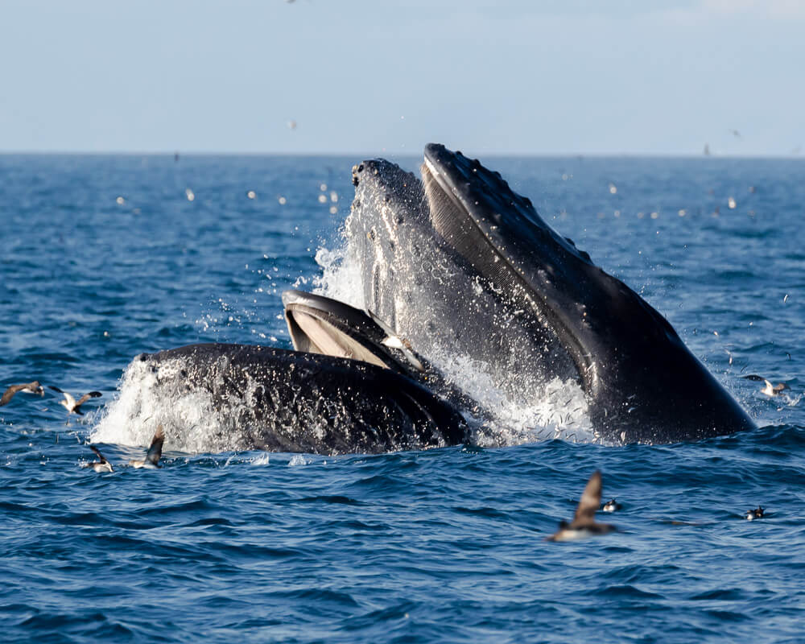
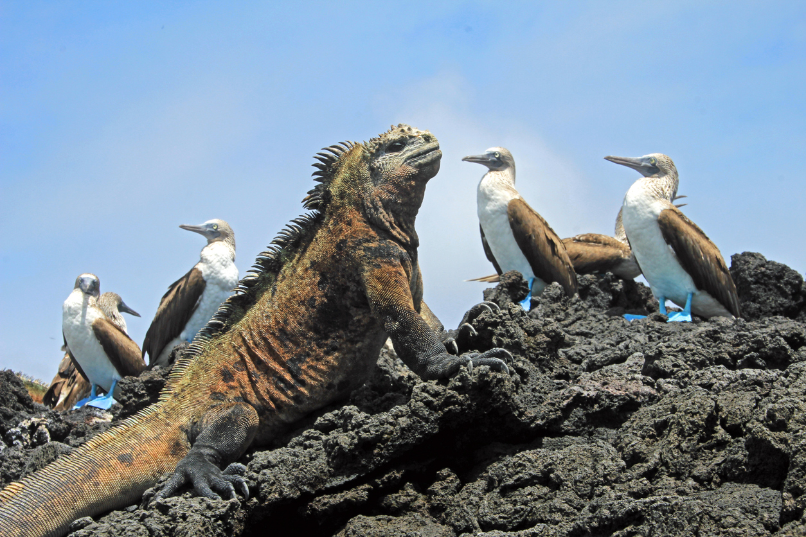
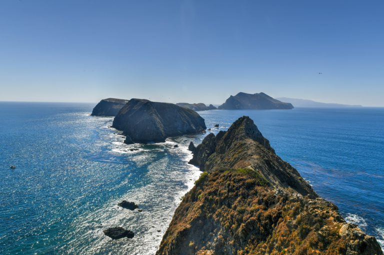

Adventures in Fire Island
Experiences and Highlights:
Fire Island National Park is a breathtaking island
sanctuary nestled in the heart of the Indian Ocean, and
visiting it felt like stepping into a world untouched by
time. The park's volcanic coastline gives way to
pristine white-sand beaches framed by turquoise waters
teeming with vibrant coral reefs, making it a paradise
for snorkelers and divers alike. Inland, dense tropical
rainforest trails wind past ancient lava formations,
exotic bird species found nowhere else on Earth, and
dramatic crater viewpoints that offer sweeping panoramic
views of the surrounding ocean. The island's strict
conservation policies mean visitor numbers are carefully
managed, lending the entire experience an rare sense of
seclusion and serenity. Whether kayaking through sea
caves at dawn or watching sea turtles nest along the
southern shore at dusk, Fire Island delivers the kind of
raw, unspoiled natural beauty that stays with you long
after you've left its shores.
Gallery: Fire Island
-

-
-

-
-

Explore the Adventure!
Fire Island National Park is one of those rare places on
Earth where nature still feels truly wild and wonderfully
alive — and it's waiting for you to discover it. Whether
you're an adventurer, a nature lover, or simply someone in
need of an escape from the everyday, this island has
something that will move you. Don't wait for the
"perfect time" — pack your bags, make the journey, and let
Fire Island remind you just how magnificent our natural
world really is.
Visit Fire island today!